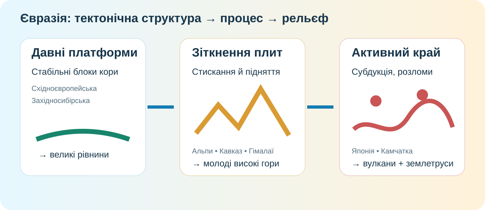

1. Гіпотеза до теорії — 3 хв
Рельєф Євразії різний переважно через роботу річок, льодовиків і вітру.
Головне пояснення — різний вік і рух літосферних структур.
Потрібні обидва механізми: тектоніка створює «каркас», а зовнішні процеси його переробляють.
2. «Мандрівка» фізичною картою — 6 хв

NASA Earth Observatory / SRTM. На зображенні добре видно різкий перехід від Індо-Гангської рівнини до Гімалаїв і Тибетського нагір’я.
Завдання 2.1. Знайдіть контраст
На карті знайдіть: Східноєвропейську рівнину, Західносибірську рівнину, Альпи, Кавказ, Гімалаї, Тибетське нагір’я. Сформулюйте одну закономірність: де переважають великі рівнини, а де концентруються найвищі гірські системи?
Завдання 2.2. Який доказ сильніший?
3. Каркас материка: плити → структури → рельєф — 7 хв

Стабільні ділянки літосфери часто відповідають великим рівнинам і плоскогір’ям.
Альпійсько-Гімалайський пояс пов’язаний із зіткненням плит та молодими високими горами.
Субдукція й активні межі плит пояснюють вулканізм та часті землетруси Східної Азії.
Ланцюжок причин
Розташуйте ідеї подумки в правильному порядку: зіткнення плит → стискання кори → складчастість/підняття → високі гори → активні землетруси. Яка ланка є безпосереднім механізмом утворення Гімалаїв?
4. Сучасний процес, а не «давня історія» — 5 хв

Доказ руху сьогодні
USGS оцінює відносне зближення Індійської та Євразійської плит у районі Гімалаїв приблизно у 40–50 мм/рік. Це не означає, що вершина Евересту щороку стає на 5 см вищою: частину деформації «з’їдають» розломи, землетруси, ерозія та складна перебудова кори.
Станція доказів: чому землетруси є кращим доказом сучасної тектонічної активності, ніж просто висота гори?
5. Коротке відео — 3 хв
Smithsonian National Museum of Natural History. Після перегляду назвіть один процес на межі плит, який прямо створює або змінює рельєф.
6. Теорія відкривається після доказу — 4 хв
Напишіть висновок: чому рельєф Євразії такий різноманітний? Обов’язково використайте слова платформа, складчастий пояс і рух плит.
Тектонічна основа
Євразія складена ділянками різного віку. Давні платформи відносно стабільні й часто виражені великими рівнинами. Молоді складчасті області тяжіють до зон взаємодії літосферних плит і відповідають високим горам.
Рельєф не «заморожений»
Гори піднімаються, розломи зміщуються, відбуваються землетруси й вулканізм. Одночасно вода, лід, вітер і гравітація руйнують та переносять породи. Реальний рельєф — результат конкуренції внутрішніх і зовнішніх процесів.
7. CER — 4 хв
Claim: «Найбільше різноманіття рельєфу Євразії пояснюється поєднанням давніх стабільних платформ і сучасних активних меж літосферних плит».
8. Домашня робота
§50. Створіть таблицю з 4 рядків: форма рельєфу → тектонічна структура → процес → доказ. Обов’язкові об’єкти: Східноєвропейська рівнина, Альпи, Гімалаї, Японські острови.
9. Тест — 10 балів
Тест відкриється лише після введення даних учня.